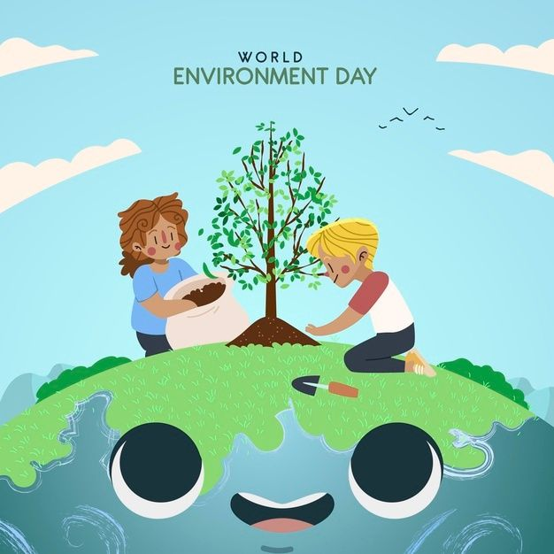
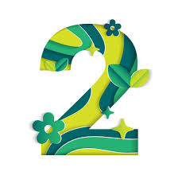
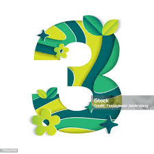

| NUM.PAG | TEMA | SUBTEMAS |
|---|---|---|
|  | CONCEPTOS | SUSTENTABILIDAD,MEDIO AMBIENTE Y Desarrollo sustentable |
|  | La Importancia del Medio Ambiente en la Actualidad | Impactos del crecimiento poblacional en la sostenibilidad ambiental |
|  | Impacto del Cambio Climático en la Sociedad y el Medio Ambiente | Consecuencias Sociales y Ambientales del Cambio Climático |
| Consumo Responsable:Impacto Ambiental y Alternativas Sostenibles | Promoción de Productos Ecológicos y Minimalismo |
|
| Efecto del Cambio Climático en la Vida Cotidiana: Adaptación y Resiliencia | Adaptación Comunitaria y Gestión de Riesgos Climático |
|
| FORMULARIO ESTUDIANTIL | PREGUNTAS |
|
Es la capacidad de satisfacer las necesidades presentes sin comprometer la capacidad de las futuras generaciones para satisfacer sus propias necesidades. Implica la búsqueda de un equilibrio entre el desarrollo económico, social y ambiental, asegurando la preservación de los recursos naturales y la calidad de vida de las personas a largo plazo.
Se refiere al conjunto de elementos naturales y artificiales que rodean a los seres vivos. Incluye el aire, el agua, el suelo, la flora, la fauna y los recursos naturales en general. El medio ambiente es fundamental para la vida en la Tierra y proporciona los recursos necesarios para la supervivencia y el desarrollo de todas las formas de vida. Su preservación es crucial para garantizar un futuro sostenible para las generaciones venideras.
La búsqueda de soluciones al deterioro ambiental ha encontrado en el desarrollo sustentable un aliado para crear nuevos métodos de subsistencia que no se basen en el daño al medio ambiente pero que tampoco impliquen atraso. Así, para los defensores de este tipo de teoría, es importante y además urgente recurrir a nuevas energías que utilicen recursos renovables y no agotables como el petróleo, a nuevas formas de comercio y consumo que no se centren en la noción de productos descartables y transgénicos sino en la presencia de productos orgánicos, sanos y que no transformen el medio ambiente.